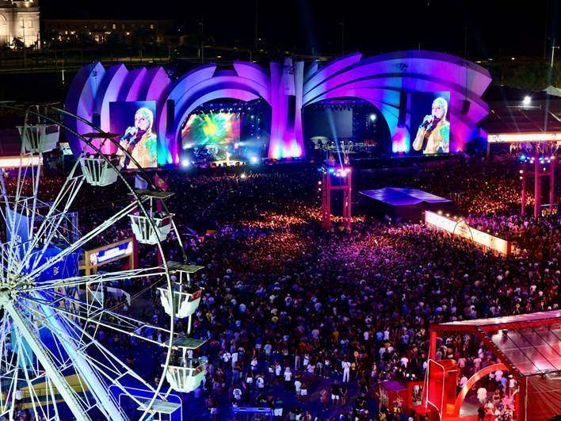

Festival de Verão
Consolidado como um dos maiores festivais de Salvador, o Festival de Verão dita o ritmo da temporada na cidade com uma estrutura monumental e um line-up que celebra a diversidade musical. Este evento atrai milhares de pessoas para viverem uma experiência única de som, cenografia e iluminação de ponta em solo soteropolitano.
